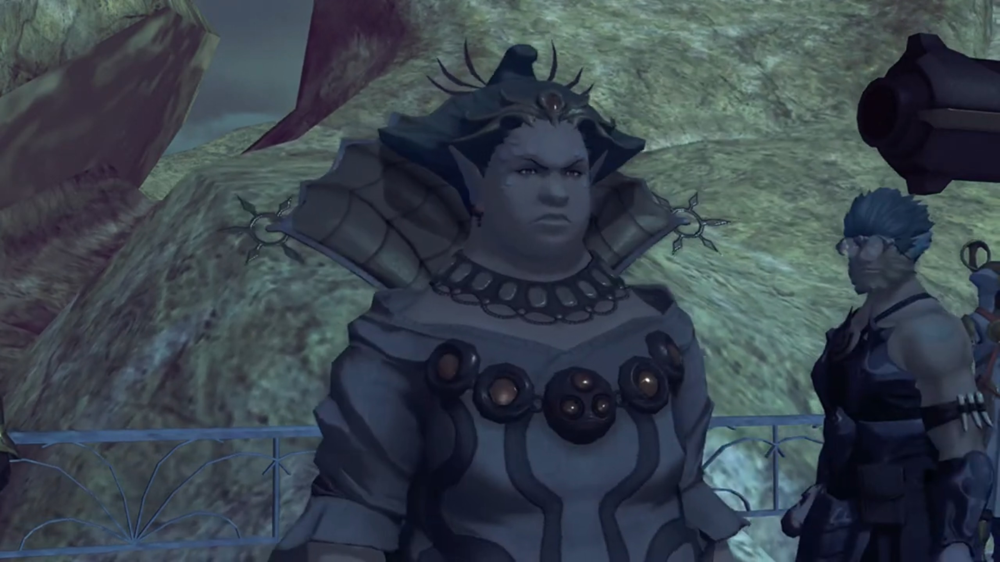
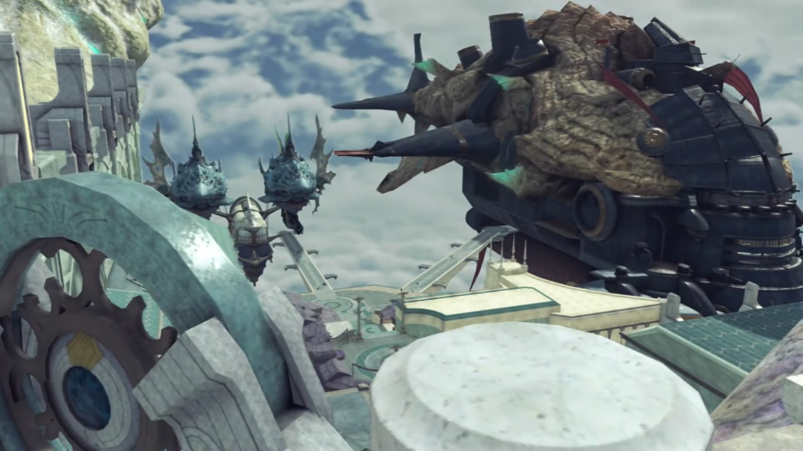
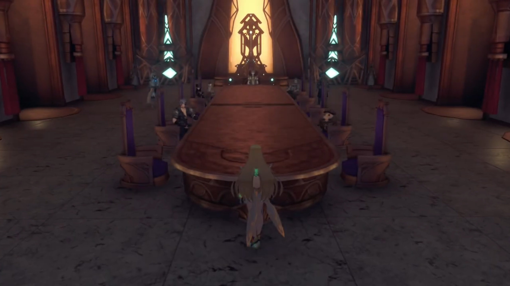
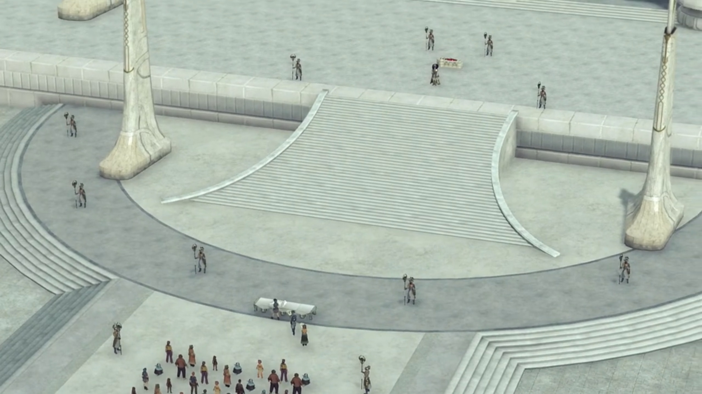
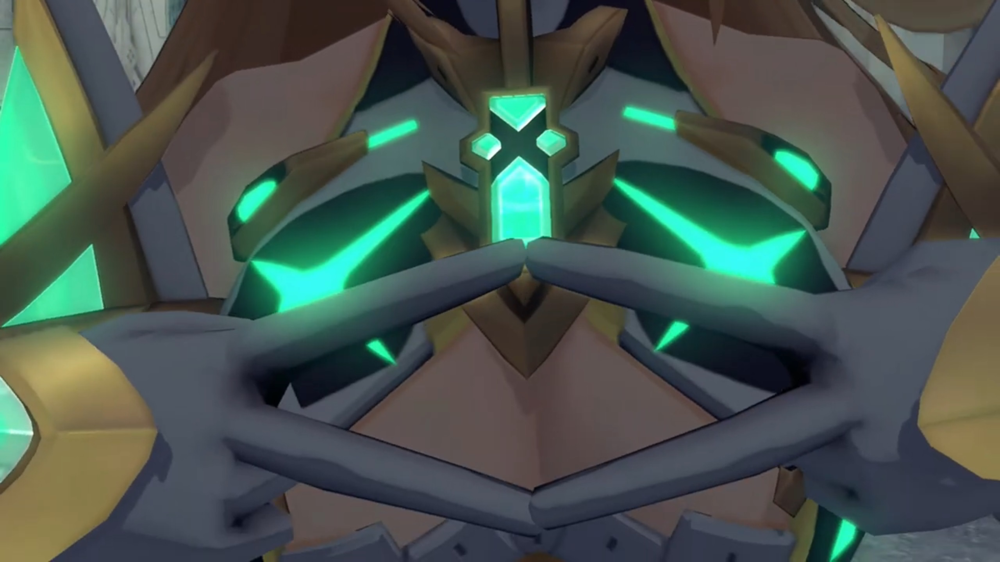
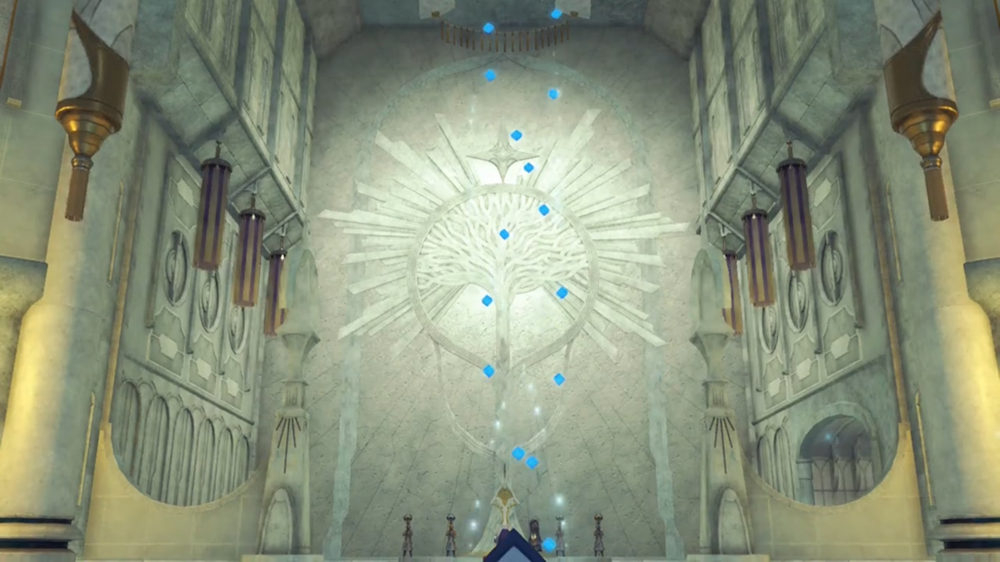

Jin and Lora, Rulers' Congress, Fan's Funeral, Aegis's Servant
He'd just woken up from an unknowingly long sleep. Immediately he saw the girl, barely 10, with short hair up till her neck and covering her forehead, looking at him with fear. His glance seemed to scare her away, as she backed away one step. So this is his new Driver? Looked so young and timid and fearful. Naturally, he stood up.
There was a guy to his left, looked thin and whimsy, from the constant work, insufficient nourishment, and prolonged intake of alcohol, a lame{{footnote: not 'boring', but 'not able to walk correctly because of physical injury to or weakness in the legs or feet', as defined here.}} himself, started scolding the little girl, "Y-you little scamp! Do you know, how much, THE CORE YOU TOOK WAS WORTH?!!! I stole it from the castle! Three- years- it took me to get it... AND NOW!!!" He watched him went up to her and started beating her up.
Another young woman in the house, sitting on her bed, did not dare rebel. She watched in fear as the guy went across the room towards the knife on the table, grabbed it in his hand, and was about to return. She mustered the courage, jumped on her feet, and grabbed his right hand, pleaded, "PLEASE! SHE'S BARELY TEN YEARS OLD!!!"
"SILENCE!!! STAY OUT OF IT!!!"
"Yargh!" He flung her hard as her head knocked against the metal cabinet, immediately went unconscious. He continued towards the little girl, oblivious of the newly awakened Blade,
"If you die, it'll be as good as new. You brought this on yourself...! YAAAAARRRRRRRGGGGGHHHHH!!!" The little girl cuddled on the floor, prepared for whatever to come; but she heard a stab in the meat and an anguished shout in intense pain, and the sound of a body collapsing on the floor.
"From now on, I'll protect you." He told the girl. She slowly removed her hands covering her eyes; he squatted in front of her, as he promised, "I'll keep you safe, always..." He softly caressed her head; she saw hope. "My name is Jin. What's yours?"
He held out his hand, and her tiny hand grabbed his finger, full of trust. Childishly, she said, "Lora..."
Jin was put in a cryo pod with concentrated healing green ether particles. Malos was looking over him, found him awake, started speaking to him, "It seems like sending Akhos was the right choice..." The cryo opened up and he sat up. "You all right?"
"I've been through worse. I can handle it."
Malos took a few seconds to muster his words, "Jin... I swear I'll make your dream come true. So stop... putting yourself at risk."
"There's... still... time."
Malos knew who he's referring to, the one frozen within ice at his 5 o'clock. He asked, "Is that... part of your dream, too?" He didn't reply. Malos wondered, "What are we, in the end? This hunger I feel, this thirst... Is it really my own? Or is it someone else's?" He looked at his palm, wondered is it his, or is it his Driver's? "Huff. Sometimes I can't tell... Tell me, Jin. Are you really... 'here'? I don't know... where I really am."
"You're starting to sound like a human."
"Oh yeah?"
"Perhaps... we're not so different after all... Humans... and Blades..."
The port of Indol today had been reserved for their VIPs. The Urayan ship cruised slowly into one of the ports. The Queen, accompanied by some sidekicks and soldiers, unboard and walked towards the Praetorium members that awaited for her. As they lead their way, the Queen heard another ship much more giant than hers, but much more metallic and rusty, coming into the adjacent port. She stopped and looked for a moment, walked away before it's parked.

The steam powered ship stopped and whenever Niall and Aegaeon walked past, soldiers on both rows will stood straight and stiff. More Praetorium members awaited for his arrival, lead him to where they will go.
All battleship in Temperantia halt mid-air, as if a game had been paused. Soldiers of Uraya, having nothing to do, gathered in small circles discussing what concerned them the most. The armor of Uraya army shaped like a salvager's, with a huge metallic head seemingly built for pressure, with only a thick glass for them to see their way. One soldier asked, "What's the deal with this ceasefire?"
Another shared, "A tribunal, it looks like. Praetor Amalthus is here in person. And who's gonna argue with the Praetor?"
"Does he have any clue how many men we lost?! If those Ardainians get away with this... Architect damn it!"
The third replied, "Quit yer grumblin', mate. All this is way beyond our pay grade."
The 2nd agreed with him, said, "You got that right. We're all just faceless cannon fodder to the bigwigs. CO{{footnote: Commanding Officer, one guess.}} says jump, we jump."
In a darkly lit room. The translucent sun-orange glass implanted on the doors and room-high windows let some sunlight in, barely enough to lit the medieval-looking table. The table stretched from one end of the room to the other, with chairs on one end and to both sides of it; they were used for feasting in the past, repurposed for this meeting. Some pillars with perhaps ether flowing in it glowed behind where Amalthus sat, on one end of that table. While to his left, the Queen and her sidekicks; to his right, Niall, Aegaeon, and Mòrag.
"My deepest thanks to you- for agreeing- to this ceasefire, Queen Raqura, Emperor Niall."
The Queen, full of condensed anger, focused herself as she put her elbow on the table and loomed closer to the others, interrupted, "As I recall from the Osirian Treaty of 350 years ago, the Praetorium was to refrain from intervention in times of war. And yet here you are, intervening. But- I trust you have a suitable justification, Your Eminence?" She laid her back once more on the seat.
He understood her anger, let her finished before answering boldly, "Naturally! But first, to ensure- impartiality- in these negotiations, may I present Niranira, Acting Chairman of the Argentum Trade Guild." He was already seated on the side of Uraya, after her sidekicks. The door opened and in walked Zeke, with the Praetor introducing, "Furthermore, representing the Tantalese... His Highness the Crown Prince Ozychlyrus Brounev Tantal... will also be attending."
"The Crown Prince?! The prodigal prince of Tantal..." One of the Queen's bodyguard was surprised.
"Hahah!" Mòrag laughed. He must've hated that name.
Atop the building overlooking where Urayan and Mor Ardain battleship parked, the soldiers, moving up and down, careful not to get near to their enemy's vicinity, did not look above them, on the roof. Who would have? They were too busy with their jobs, speaking or buying supplies or whatnots. Plus, Mikhail and Patroka were just a tiny dot on the horizon; they could've easily be mistaken as large birds resting after a long flight in the Cloud Sea.

Mikhail exclaimed, "What a spectacle... Seems the Praetor- has as much clout around here as ever."
Patroka wondered, "Could we not just take them out here and now?"
"Good point. All the principal nations' heads gathered here, it'd make things easy later."
"The way to the World Tree must first be opened." Akhos walked up from behind, reminded them of their goals. "Wiping out mankind is the easy part. We could manage that ourselves."
Patroka: "Even so..."
Akhos convinced them to be patient, "That isn't our only goal, remember? We must wait- for the stage to be set."
"Is Jin serious about this?"
Mikhail looked up in the sky, as if he saw Jin there, philosophically spoke, "Yeah, I've been wondering that myself..."
Akhos strongly believed in him, "Heheheheh. Oh, he's serious. He always is. He will annihilate mankind, and then... he will kill... the Architect."
Now that everyone got themselves seated, Amalthus went straight to the point, "Now, it seems... Mor Ardain has been accused of a unilateral breach of treaty in this matter. Emperor Niall, I open the floor to you. Is there anything you wish to say?"
"While we are still conducting investigations into the cause, it cannot be denied... that weaponry belonging to our forces, was discharged against Uraya. Regardless of any- possible- reason- and circumstance, we are prepared to offer recompense- for this grave offence."
The Queen listened and concluded immaturely, "So you want to settle this with money...?"
"We will provide any compensation deemed necessary."
She shook her head, bent forward with her elbow once more on the table, replied seriously, "Perhaps I am misunderstanding. To my ears, it sounds almost as if you mean to imply that the blame for these offences... does not lie with Your Majesty, at all!"
"We are investigating. I ask that we not draw any hasty conclusions."
Amalthus wholly rejected with "What need is there for investigation? I believe a cause has already been established. There are witnesses."
"And that would be..." the Queen pressed.
The Praetor looked to Zeke. He started the story.
The Queen shunned the story in disbelieve, "What a preposterous notion! The people you speak of are merely a terrorist group! How could they possibly command that measure of-?"
Zeke forcefully cut her off, "It's the truth! I, Ozychlyrus, swear this in the name of King Eulogimenos Tantal."
Niranira added, "Can confirm- Ex-Chairman Bana- give these people some kind of supplies. Military supplies, me thinks. And in great number, yes."
The Queen's heart slightly touched, with more than a single source of witness. Yet, she don't understand, "But why would...?"
Amalthus added, "What if, I were to tell you that the Aegis Malos, who razed the world five centuries ago, was involved?"
"RIDICULOUS!!! EVERYONE knows he DISAPPEARED in a blaze of flame!"
"He's very much alive, believe me." Zeke added, cannot retain his anger, "That arsehole -- I mean, the Aegis -- has confronted us in person. And if my word is not enough for you..." He looked to the Praetorium worker standing by the door. The worker got his signal, and he went for the door; the rest of them waited for whoever he's to bring back with.
The Queen observed Mythra's in her entirety. "A Blade?! But-but that Core Crystal HUH!!!"
Zeke introduced her, "This is another Aegis, named Mythra. Your Highness has heard of her, surely?"
"So the rumors that reached us were true... Who is its Driver?"
"If you knew that, I daresay your surprise would be even greater. BUT- that is not the matter we are here to discuss, Your Highness. THIS is a DIRE situation..."
From the time she went in hours ago, he'd been looking out the window in his room that directly faced the hall. Yet, no sign of the door opening. "Six o'clock already... Mythra's been in there... for a loooong- time now..."
Nia wished him patience, "We've just gotta trust 'em. They're dealing with the leaders of whole nations. It's not like there's anything you or me can do to help..." The rest whom didn't attend gathered in the room, all seated uneasily.
"Huh..." He looked out of the window, felt so weak and powerless. If only...
There was no seat prepared for Mythra. She stood by the other end of the table, directly facing Amalthus, shared, "I've noticed something about Malos. He's an Aegis... But you wouldn't know it from how he's fighting. I think... I'm pretty sure he's damaged in some way."

The Queen's sidekick that wore glasses clarified, "You mean he can't use the full extent of his powers?"
"The wounds I dealt in our battle long ago may- not- be completely healed. His end-goal- is Elysium. He wants to go back to the place he was born. There he can heal until his powers have recovered. If Malos is allowed to restore himself..."
The Queen can already pictured, "The horrors of five centuries past will return..."
"Or worse still. Malos's goal is simple. He means to... destroy humanity- in its entirety."
Niall couldn't understand, "Why would anyone desire that?"
"Perhaps he doesn't even need a reason. It seems to be a deep-seated drive. An instinct. As natural as breathing."
The group took time as they digested the heart-heavy information. Where will their future lies? Amalthus brought their attention back to him, as he spoke with guilt, sincerely or pretended, "All of this- is my responsibility."
"Praetor Amalthus? What do you mean?" asked Niall.
"It was none other than I... who awakened Malos... and unleashed him... upon the world."
Queen Raqura seat up, "So, Your Eminence... the rumor that you were once Malos's Driver is..."
"I never intended to obscure the truth. It is writ plain... for all to see in history books. I was a fool. It was to prevent such foolishness... that alllll passage to the World Tree- was forbidden- after the Aegis War. However, it has become apparent- that the laws of men do not apply to Malos..." He waited for a while to think, before announcing boldly, "Huh... The time may have come... to lift- that restriction..."
Everyone else had already left the room. By the door, Mythra stayed back with Amalthus. "I appreciate this."
Mythra snapped, "Don't think you've earned my trust. But since Rex is going to Elysium, their paths are bound to cross... That's all."
The Praetor nodded, commented, "I'm surprised- you seem so devoted to the boy."
She looked away, "It's for both our sakes." Then look back at him, "But you, Amalthus... Who is it that you're living for?"
"Huh..."
The sun had just came out not long ago. Perhaps it was around 8 in the morning, when the inhabitants of the Indoline Praetorium gathered by the plaza, paying the tribute to Fan, putting flowers beside her coffin. Behind, some soldiers stood in a semicircle and near Amalthus, on the stage. Rex stood at the far edge of the Plaza, did not went forward to pay his tribute. Gramps cared not to disturb him in this moment. Mythra, Nia, and Dromarch accompanied him here, but they stay far, squatting or standing near the wall.

Nia commented, "I guess they did call her a Goddess... The state funeral makes sense." Then asked Mythra, "Shouldn't you be with him?"
"He's a boy. Best not to bother them at times like this."
"Heh! I expected you'd be more clingy. You really are different from her."
"Actually, letting him be was more her idea than mine."
"Really? Pyra's? Get out!" She don't believe it, but something clicked, "So wait, you're saying you WANT to go be clingy, or what?"
She looked at her feeling annoyed, threatened, "I'll burn you."
Nia jumped up, "I kid, I kid! Sheesh!"
The inhabitants closed their eyes, holding onto the flowers on their hand, or just clenched them together and held close to their heart, while Amalthus bowed before Fan.
Nia asked quietly, "It's weird though..."
"What is?"
"I mean, don't you think it's odd? Normally, if a Blade or its Driver dies, it'll just go back to being a Core Crystal. So why is Fan just dead?"
"I did wonder the same thing. There's only one way I know for a dead Blade to keep its physical form. Remember Minoth? I mean Cole. He was a Flesh Eater."
"Yeah."
"But... Fan wasn't a Flesh Eater. I can say that for sure." Then she made a diamond shape with her fingers.

"What's that?"
"That's the shape of Fan's Core Crystal. Well, how it used to be."
"But... now, it's a triangle!"
"Rex and I are quite a unique case, but this is different still."
"How's it different?"
"If a Blade shares its core with another, its shape changes in a uniform fashion. In our case, the center part went to Rex, and the outer part to us. I don't know why that is, but it seems to be a rule."
"But... Fan's isn't like that..."
"Exactly." The coffin lid was closing as they prepared for her burial. Mythra eyed Amalthus afar, her mind went to one unbelievable yet the most likely possibility, "It looks more like... someone stole her core, doesn't it?" And that someone had final speeches with his fellow inhabitants.
They walked into the room with the Praetorium Sigil carved out on the wall. Amalthus stood before the crystals, where bubbles washed over them. The Core Crystals floated into a shape like DNA, rotating around the central axis of the helix. After Amalthus finished, he turned to the group, "My apologies. Did I keep you waiting?"

"N-no, not- really. What... were you doing?"
"I was cleansing the Core Crystals. It markedly increases- their resonance success rate. Bonding with a Crystal carries certain risks, you understand..."
"I know."
"When I became the Driver of an Aegis, this power- was awakened in me."
"So... I-I might be able to do it too?"
"Who knows? Different people are cut out for different things..."
"Right, yeah."
"Now then. My work is done for the day. Come with me."
The meeting room, still dark as ever. They gathered around a small table located behind where Amalthus sat earlier during the meeting. He explained what he wanted the group to do, and Rex was surprised, "A special envoy... to Tantal? Me?"
"Correct. Behold." On the table, a map of Alrest and the titans were laid out before them, "As a salvager, I imagine you are already aware. But this- is Alrest, the world we currently inhabit. We make our home on Titans, moving in circles- around the World Tree. And here- lies the Great Void." A great distance from the edge of the waterfall that surrounded the World Tree from its bark.{{footnote: Can we not fly through? Any flies would be whipped down by Ophion.}} "This Void, came into being 500 years ago. It did not exist prior to that."
"So I've heard. It's in our way, anyway. I-It stopped us reaching the World Tree."
"The Great Void, is carved from the Cloud Sea by a monstrous beast- known as Ophion."
Rex recalled, "Wait, you mean... that thing?"
"To be precise, it is an Artifice, a servant of the Aegis."
"Of Mythra?" He looked to her. She didn't deny.
Nia wondered, "So if that thingy is Mythra's, then what did it attack us for?! Doesn't make sense!"
Mythra explained, "Ophion was felled in the ancient battle with Malos, sinking below the clouds..."
Electric sparkled in its head, it losing vitality, and crashed into the clouds below.
Mythra continued, "This means... someone must have revived it."
Amalthus agreed, "Correct."
"And you're saying that someone was Zeke's home country, Tantal?" Mythra asked.
"Yes. They gave Ophion one directive. To ensure that none approach- the World Tree. They sought to prevent a repeat of the horrors of the Aegis War. So... an obstacle was created -- the Great Void."
"How did they manage a feat like that?"
"As I've said, mankind- is regressing." Zeke said nothing, had his head dropped all the time. Amalthus continued, "Only one artifact remains- that can rescind Ophion's orders, and it lies in Tantal."
Zeke opened his mouth finally, "It's called the Omega Fetter, and it's guarded by the royal family. I'll take you to it."
"I've prepared your envoy documents already. Your quest- is to set foot in Elysium, correct? Malos and his ilk... will surely seek the Omega Fetter for themselves. I would ask you... to reach Elysium before they do, and inform me of what you find there. Do it as a favor... for a once-foolish old man. And so that people may have a future... in this dying world..."